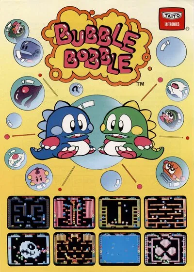

FBA (FinalBurn Alpha)
Bubble Bobble
- Año: 1986
- Desarrollador: Taito Corporation
- Género: Plataformas / Correr y saltar
- Jugadores: 2 jugadores
Uno o dos jugadores encarnan los personajes de Bub y Bob, dos pequeños dragoncitos que deben luchar a través de 100 niveles contra sus enemigos para rescatar a sus amadas novias secuestradas por el temible villano Super Drunk (con quien se debe luchar en el nivel 100).
Para conseguir su ansiado objetivo Bub y Bob únicamente están armados con su habilidad y capacidad de lanzar burbujas, en las cuales sus enemigos quedan atrapados durante un tiempo y cuando Bub o Bob las tocan, estas explotan acabando con los enemigos atrapados dentro. Al acabar con los enemigos, se reciben recompensas en forma de puntos y de diversas frutas y dulces que deberán ser recogidos en el correspondiente nivel. Cuantos más enemigos sean eliminados juntos de una sola vez mayores recompensas se obtendrán.
Las burbujas son lanzadas por la boca de los dragones y duran un tiempo determinado hasta que desaparecen del nivel o explotan por sí mismas. Estas burbujas pueden ser utilizadas como plataformas de salto por nuestros protagonistas para alcanzar áreas en apariencia inaccesibles o dar saltos gigantescos.
Entre Bub y Bob existe un gran entendimiento y suelen ayudarse mutuamente para derrotar a sus enemigos. De esta forma Bub puede por ejemplo lanzar burbujas a Bob para que éste salte sobre ellas y consiga llegar a algún lugar quizás inalcanzable si no cooperaran entre sí.
Este es el argumento de uno de los clásicos de los juegos arcade. Se convirtió en juego de culto y aún hoy lo sigue siendo.
Uno de los grandes atractivos de este juego es la cantidad de diferentes ítems que pueden obtenerse. A lo largo de la partida se puede conseguir fuerza y armas extra.
Entre estos ítems se encuentran:
Zapatillas rojas: Aumenta la velocidad de Bub y Bob. Caramelo rojo y blanco: Incrementa la distancia de lanzamientos de las burbujas. Caramelo púrpura y cian: Incrementa la velocidad de las burbujas Caramelo naranja y amarillo: Incrementa la velocidad de disparo de la burbuja. Reloj: existe más de un tipo. Uno por ejemplo detiene el tiempo. No hurry up! ni ballenas fantasma. Bomba: Diamantes de 10.000 (libre) o 6.000 (en burbuja). Paraguas naranja: Salta 3 niveles. Paraguas rojo: Salta 5 niveles. Paraguas púrpura: Salta 7 niveles.
Lámpara celeste: Acumula puntos con el movimiento. Lámpara amarilla: Incrementa la velocidad de disparo y la distancia de lanzamiento de las burbujas. Lámpara roja: Incrementa la velocidad de disparo, burbujas y la distancia de lanzamiento.
(Estos poderes son similares al de los caramelos, pero se pierden al terminar el nivel en el que los cogiste)
Anillo celeste: Acumula puntos con el movimiento. Anillo rojo: Acumula puntos saltando. Cruz roja: Se dispara fuego en lugar de burbujas acabando directamente con el enemigo. Cruz celeste: Se llena el nivel de agua eliminando a todos los enemigos. Diamantes de 7.000 (libre) o 6.000 (en burbuja) Cruz anaranjada: Rayos gigantes atraviesan la pantalla matando a los enemigos. Diamantes de 8.000 (libre) o plátanos de 500 (en burbuja). Bastones: Al terminar el nivel cae una fruta o dulce gigante y todas las burbujas del nivel se transforman en el mismo tipo de recompensa. Cofres: Al finalizar el nivel cae un diamante gigante y todas las burbujas del nivel se transforman en el mismo tipo de recompensa. Líquidos: Desaparecen los enemigos y se llena la pantalla de frutas. Puertas misteriosas: Llevan a Bub y Bob a un nivel lleno de diamantes de todos los colores. Pueden aparecer 3 puertas en todo el juego, en los niveles 20, 30 y 40 si no has perdido ninguna vida al llegar a ellos). Puerta antigua: Salta 20 niveles. Únicamente aparece una en todo el juego. Si consigues llegar al nivel 50 sin haber perdido ninguna vida en el intento.
CURIOSIDADES Existen algunos retos en el juego como el que consiste en no perder ninguna vida durante el desarrollo de la partida. De esta forma, cada 10 niveles, aparecen unas pequeñas puertas que, al entrar por ellas con uno o ambos protagonistas, se accede a un nivel oculto lleno de diamantes que deben ser recolectados. Este nivel sustituye al siguiente en el que se estuviera, es decir, si se coge en el 20, ese nivel oculto equivaldría al 21 y al terminarlo se aparece en el nivel 22. Cada nivel de este tipo te hace saltar un nivel automáticamente. De esta forma, al entrar por estas puertas secretas, se pueden saltar un total de 3 niveles: 21, 31 y 41.
Luego existe una última puerta secreta que aparece en la panel nivel 50 y que hace que cuando uno de nuestros protagonistas entra por ella se saltan 20 niveles hacia adelante, apareciendo en el nivel 70 directamente y pudiendo llegar al último nivel (el número 100) de una forma más rápida.
Estas puertas secretas dejan de aparecer en el momento en que el que el primer jugador pierde su primera vida. En cambio el segundo jugador puede ayudar a Bub en situaciones donde pueda correr ese riesgo, hasta incluso perder vidas consiguiendo así que la puerta pueda aparecer en un determinado nivel.
Trucos o cheats. En las puertas aparecen runas, estas se pueden traducir como derecha, izquierda, arriba, abajo, botón de salto y botón de disparo. Cuando el juego no se ha iniciado, o no se ha introducido la moneda en la correspondiente máquina de salón de recreativo, aparece la pantalla con el logotipo de Bubble Bobble a tamaño grande en amarillo. Introduciendo en ese momento unas secuencias de comandos que dictan las puertas se consiguen capacidades extras durante el juego, cuando ya tienes algún crédito o has insertado la moneda. Lo más increíble, es la secuencia de comandos que hace aparecer una palanca, de manera que puedes elegir entre jugar a Bubble Booble o bien Super Bubble Booble.
EJEMPLOS - Obtener la zapatilla roja y los caramelos amarillo y azul durante toda la partida. Se debe pulsar por este orden: izquierda, salto, izquierda, 1up, izquierda, disparo, izquierda 1up
- El truco para que aparezcan todas las puertas que dan a los niveles ocultos aunque nos eliminen es: disparo, salto, disparo, salto, disparo, salto, derecha, 1up
- Cuando terminamos la partida e introducimos nuestras tres iniciales para identificar nuestra posición en el ranking final, existen temas de iniciales que nos dan nuevas capacidades en la siguiente partida. Cada uno de ellos desbloquea un ítem que provoca efectos distintos sobre nuestros enemigos: KTT: cerveza STR: flamingo SEX: tenedor TAK: pulpo KIM: refresco.
- Disparando y explotando burbujas contra un muro y conseguir que el marcador de uno de los protagonistas acabe por dos números iguales seguido de un cero o tres ceros al finalizar el nivel (ejemplos 55.110, 53.000 ), provoca que todas las burbujas exploten al finalizar el nivel convirtiéndose en frutas o dulces de diversos tipos dependiendo de los números que sean.
Bubble Bobble es una continuación del juego Rainbow Islands.
Controles
Dos botones.
| Panel | Juego |
|---|---|
 | Lanzar burbuja |
 | Saltar |
 | Moneda |
  | Empezar |
+  | Salir del juego |
El panel en FBA (FinalBurn Alpha)

Longplay

Partida completa de la recreativa (102 min), de AL82 Retrogaming Longplays: Bubble Bobble Longplay (Arcade) [60 FPS].